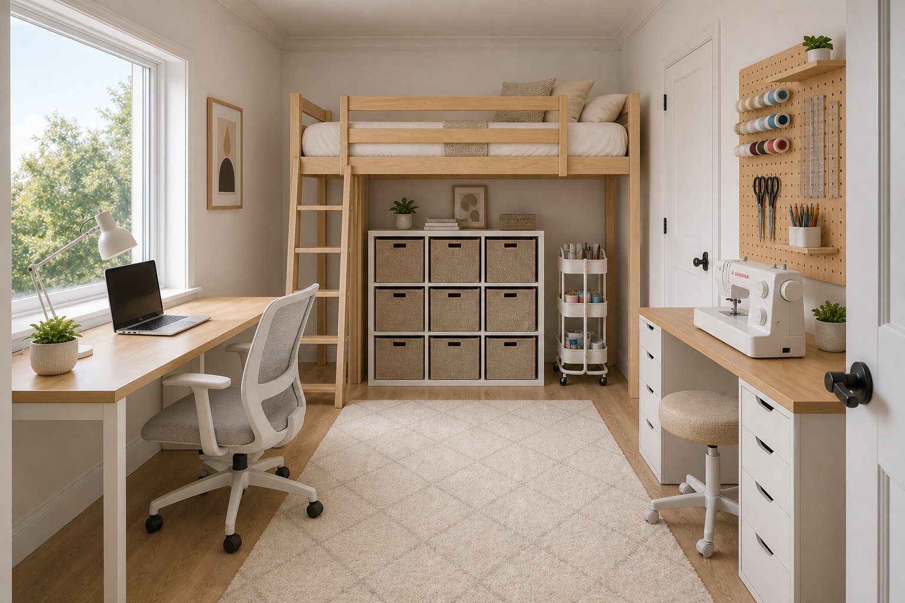

Narrow room with a light-birch Scandinavian loft bed and a dedicated sewing station underneath, sourced from IKEA.

At a 7' (84") ceiling, no off-the-shelf IKEA loft bed fits — STORÅ needs 8'10"+ and VITVAL needs 7'10½". A low/mid-loft (platform ~58") is the realistic path: ~58" of seated workspace below, but a crawl-in bed rather than sit-up headroom above.
Schematic, not to scale. Loft footprint at the window end; desk runs beneath it, fabric storage along the left wall.
| Option | Type | Height | Needs | Verdict |
|---|---|---|---|---|
| STORÅ | Full / solid pine | 84¼" | 8'10"+ | Matches reference, too tall |
| VITVAL + desk top | Twin / white | 76¾" | 94½" | Closest, still won't fit |
| Low / mid-loft build | Custom birch ply | ~58" plat. | Fits 7' | Crawl-in bed, seated work below |
Source: IKEA.com product specs (US), checked 2026.
| Product | Finish | Role | Approx. price |
|---|---|---|---|
| ALEX drawer unit ×2 | White | Desk legs + thread/notions storage | ~$130 ea |
| LINNMON / LAGKAPTEN top | Light wood | Desk surface spanning the ALEX units | ~$40–70 |
| MICKE desk (alt.) | White | All-in-one option if you skip the combo | ~$99 |
| SKÅDIS pegboard + hooks | Birch | Scissors, thread, rulers above the desk | ~$30+ |
| KALLAX 2×4 shelf | White | Folded fabric + bins (left wall) | ~$80 |
| RÅSKOG cart | Gray/white | Mobile catch-all for active projects | ~$45 |
| MALSKÄR / GUNRIK chair | White | Swivel sewing chair | ~$80–130 |
1. Low/mid-loft build — platform ~58", seated sewing below, crawl-in bed above. No exact IKEA SKU; a custom birch platform or IKEA hack.
2. Skip the loft — daybed plus a wall-mounted sewing zone if you want full standing headroom.
• Confirm low-loft build vs. dropping the loft.
• Re-render to match the chosen approach.
• Option: straight-on elevation of the sewing wall.
• Option: warmer cream palette from reference #1.
The render is an artistic visualization — dimensions are approximated and furniture resembles, but is not an exact copy of, the IKEA pieces listed.